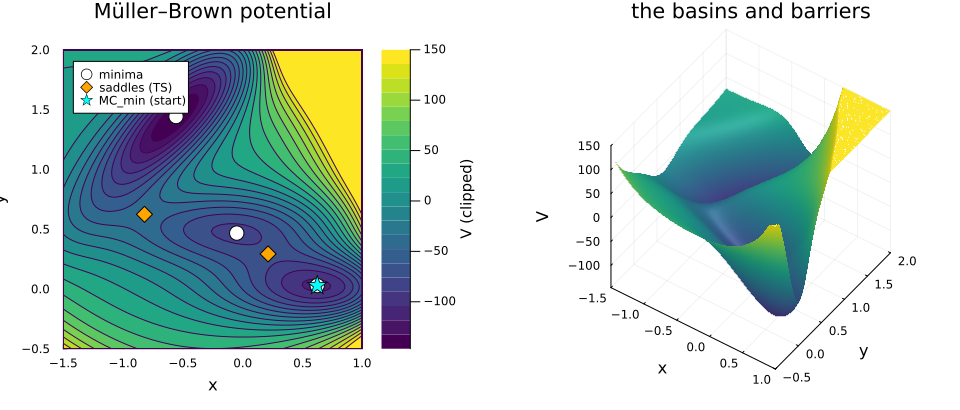
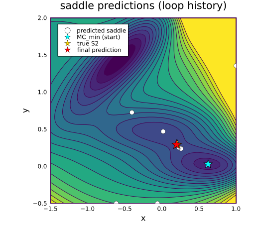
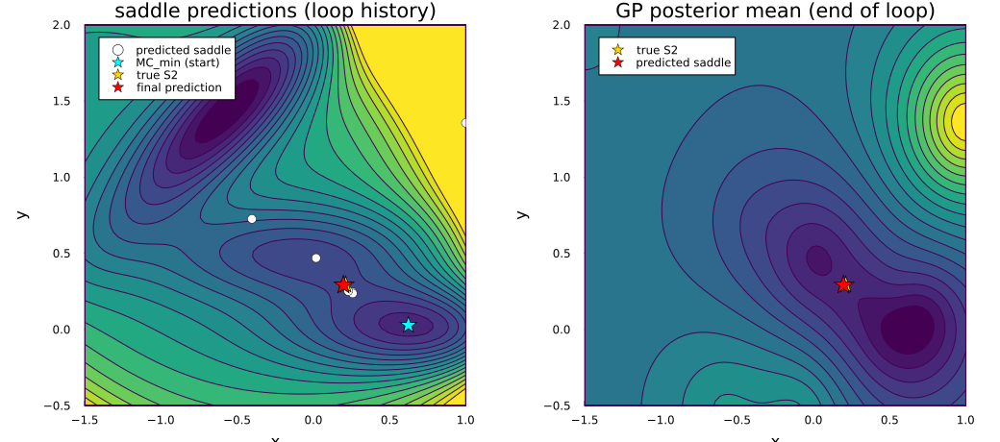
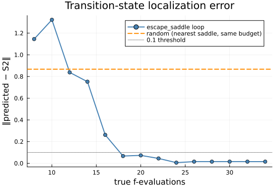

Müller–Brown: a transition state from one known minimum
The Müller–Brown potential (Müller & Brown, Theor. Chim. Acta 53, 75 (1979)) is the standard 2-D benchmark for transition-state search: a sum of four Gaussians with three minima (metastable states) joined by two index-1 saddles (the transition states on the minimum-energy path between basins).
In chemistry, locating a transition state is expensive because each energy evaluation is a DFT calculation. We can model this with a GP: treat the potential as a black-box f : ℝ² → ℝ, start from one known stable state (MC_min, the deep right basin), and find the transition state leading out of it by climbing the GP surrogate's softest mode — evaluating the true f only when the walk predicts a new saddle candidate. This is the single-ended (dimer-on-GP) workflow used in Denzel & Kästner (2018), here on the canonical toy surface.
Setup
ENV["GKSwstype"] = "100" ## GR headless rendering (no display required)
using Magpie, KernelFunctions, LinearAlgebra, Random
using Statistics: mean, std
using Plots; gr()
import KernelFunctions as KFThe potential and its landscape
The four Gaussians give a deep right basin, a shallow central basin, and a high-left basin, separated by two saddles. We work on the conventional window and clip the steep exponential walls for display (the true f reaches ~10³ at the corners).
const A = (-200.0, -100.0, -170.0, 15.0)
const aa = (-1.0, -1.0, -6.5, 0.7); const bb = (0.0, 0.0, 11.0, 0.6)
const cc = (-10.0, -10.0, -6.5, 0.7)
const x0 = (1.0, 0.0, -0.5, -1.0); const y0 = (0.0, 0.5, 1.5, 1.0)
function mullerbrown(p)
x, y = p[1], p[2]; s = 0.0
for k in 1:4
dx = x - x0[k]; dy = y - y0[k]
s += A[k] * exp(aa[k] * dx^2 + bb[k] * dx * dy + cc[k] * dy^2)
end
return s
end
box = Box([-1.5, -0.5], [1.0, 2.0])Box{Vector{Float64}}([-1.5, -0.5], [1.0, 2.0])The five true critical points (literature values): three minima and two index-1 saddles. MC_min is the deep right basin — the one we start from. S2 is the transition state leading out of it toward the central basin MB_min.
const MA_min = [-0.558, 1.442] # high-left minimum
const MB_min = [-0.05, 0.467] # shallow central minimum
const MC_min = [0.623, 0.028] # deep right minimum (starting point)
const S1 = [-0.822, 0.624] # saddle between MA and MB
const S2 = [0.212, 0.293] # saddle between MB and MC (escape TS from MC_min)
truth = [MA_min, MB_min, MC_min, S1, S2]
true_kinds = [:min, :min, :min, :saddle, :saddle]
xl = range(-1.5, 1.0; length = 100); yl = range(-0.5, 2.0; length = 100)
Vclip(p) = min(mullerbrown(p), 150.0) ## clip walls for a readable contour
Zf = [Vclip([xi, yj]) for yj in yl, xi in xl]100×100 Matrix{Float64}:
135.338 130.032 125.045 120.355 … 150.0 150.0 150.0
127.423 122.473 117.819 113.441 150.0 150.0 150.0
120.074 115.451 111.104 107.015 144.888 150.0 150.0
113.244 108.924 104.861 101.037 134.751 142.899 150.0
106.892 102.851 99.0493 95.4705 123.743 131.777 140.424
100.978 97.1958 93.6356 90.2831 … 111.817 119.743 128.289
95.4681 91.9242 88.5874 85.4441 98.965 106.788 115.241
90.3279 87.0051 83.875 80.9252 85.2264 92.9529 101.319
85.5274 82.4094 79.4709 76.7002 70.6951 78.3304 86.6181
81.0378 78.1099 75.3493 72.7448 55.5233 63.0735 71.2899
⋮ ⋱
21.9584 21.8431 21.7465 21.6679 150.0 150.0 150.0
22.4281 22.3197 22.2308 22.1607 150.0 150.0 150.0
22.9277 22.8262 22.7449 22.6832 150.0 150.0 150.0
23.4589 23.3645 23.2908 23.2375 150.0 150.0 150.0
24.0235 23.9364 23.8705 23.8256 … 150.0 150.0 150.0
24.6236 24.5438 24.486 24.4498 150.0 150.0 150.0
25.261 25.189 25.1394 25.1122 150.0 150.0 150.0
25.9379 25.874 25.8331 25.8152 150.0 150.0 150.0
26.6568 26.6013 26.5696 26.5615 150.0 150.0 150.0The landscape: minima (circles) and saddles (diamonds) are the five critical points. We start from MC_min — the deep right basin — and ask: where is the transition state leading out of it?
plt_contour = contourf(
xl, yl, Zf; levels = 20, c = :viridis, colorbar_title = "V (clipped)",
aspect_ratio = :equal, xlims = (-1.5, 1.0), ylims = (-0.5, 2.0),
xlabel = "x", ylabel = "y", title = "Müller–Brown potential"
)
for (kind, mk, col, lab) in ((:min, :circle, :white, "minima"), (:saddle, :diamond, :orange, "saddles (TS)"))
idx = findall(==(kind), true_kinds)
scatter!(
plt_contour, [truth[i][1] for i in idx], [truth[i][2] for i in idx];
m = mk, ms = 8, mc = col, msw = 1.2, label = lab
)
end
scatter!(
plt_contour, [MC_min[1]], [MC_min[2]];
m = :star5, ms = 10, mc = :cyan, msw = 1.0, label = "MC_min (start)"
)
plt_surface = surface(
xl, yl, Zf; c = :viridis, colorbar = false, camera = (35, 45),
xlabel = "x", ylabel = "y", zlabel = "V", title = "the basins and barriers"
)
plot(plt_contour, plt_surface; layout = (1, 2), size = (960, 410))
The minima are metastable chemical states; the saddles are the transition states that gate the rate of hopping between them. S2 is the escape saddle from MC_min.
Taming the dynamic range
The raw potential spans ~10³ over the box (deep wells, exp walls). We clip at a ceiling and z-score so the surface the GP sees is ~unit-scale — the standard surrogate-conditioning move for stiff potentials. We fix the lengthscale rather than refitting: at the scarce sample sizes here, marginal-likelihood fitting drives ℓ up and washes the wells out.
const CEIL = 200.0
let g = grid_points(box; per_axis = 50), v = min.(mullerbrown.(g), CEIL)
global const _μ = mean(v); global const _σ = std(v)
end
mbt(p) = (min(mullerbrown(p), CEIL) - _μ) / _σ ## clipped, z-scored — what we condition on
const NOISE = 1.0e-30.001A custom anisotropic Matérn kernel
The potential is rough and the reaction valley is narrow across the path but flat along it, so an anisotropic Matérn is the honest prior. Plain MaternKernel is non-differentiable at r=0, which breaks the gradient-variance term grad_predict needs (the squared distance hides a √); we sidestep it by evaluating the kernel in r² with a short Taylor branch near 0 (technique from CovarianceFunctions.jl, MIT-licensed). One lengthscale per input axis gives the anisotropy.
struct TaylorMatern32{V} <: KF.Kernel
invℓ::V
end
function (k::TaylorMatern32)(x, y)
s = sum(abs2, (x .- y) .* k.invℓ) # r² = Σ ((xᵢ-yᵢ)/ℓᵢ)²
if s < 1.0e-6
return 1 - 1.5 * s - 1.125 * s^2 # Taylor of ψ(r²) near 0 (AD-smooth)
else
r = sqrt(s)
return (1 + sqrt(3) * r) * exp(-sqrt(3) * r)
end
end
mbkernel() = TaylorMatern32(1.0 ./ [0.35, 0.45]) # anisotropic feature scales (x, y)mbkernel (generic function with 1 method)Finding the escape transition state from one known minimum
We know one stable state (MC_min, the deep right basin) and nothing else. To find the transition state leading out of it we climb the softest local mode (a gentlest-ascent / dimer walk) on the GP mean, evaluate the true potential where the walk predicts the saddle plus one GradStraddle point to reduce gradient uncertainty along the way, re-condition, and repeat. The GP surrogate replaces the expensive inner force evaluations a classical dimer would need.
Each iteration: (1) compute the softest Hessian eigenvector at MC_min (the escape direction); (2) run saddle_walk in both signs of that direction and keep any index-1 result; (3) evaluate mbt at the predicted saddle and one GradStraddle point; (4) update the GP.
function escape_saddle(f, m0, kernel, box; budget = 14, noise = NOISE, rng = Random.default_rng())
pts = [clamp.(m0 .+ 0.08 .* randn(rng, 2), box.lb, box.ub) for _ in 1:5]
push!(pts, collect(float.(m0)))
g = update(ExactGP(kernel; noise = noise), pts, f.(pts))
hist = Tuple{Int, Vector{Float64}, Symbol}[]
res = (; x = collect(float.(m0)), H = zeros(2, 2))
for t in 1:budget
v = eigen(Symmetric(grad_predict(g, m0)[3])).vectors[:, 1] # softest mode at the basin
# climb both signs on the surrogate; keep the branch that reaches an index-1 saddle
walks = [saddle_walk(g, clamp.(m0 .+ 0.2 .* s .* v, box.lb, box.ub); box = box) for s in (1.0, -1.0)]
saddles = filter(w -> classify(w.H) == :saddle, walks)
res = isempty(saddles) ? argmin(w -> w.residual, walks) : argmin(w -> w.residual, saddles)
xacq = acquire(g, GradStraddle(β = 1.96); over = box) ## explore high gradient-uncertainty
g = update(g, [res.x, xacq], f.([res.x, xacq]))
push!(hist, (length(pts) + 2t, copy(res.x), classify(res.H)))
end
return res, g, hist
end
Random.seed!(1)
res, gfit, hist = escape_saddle(mbt, MC_min, mbkernel(), box; budget = 14)
@info "escape transition state" predicted = round.(res.x; digits = 4) truth_S2 = S2 err = round(norm(res.x .- S2); digits = 4) kind = classify(res.H)┌ Info: escape transition state
│ predicted = 2-element Vector{Float64}: …
│ truth_S2 = 2-element Vector{Float64}: …
│ err = 0.0154
└ kind = :saddleLandscape and the climb
The contour below shows the true potential with the sequence of saddle candidates the loop predicted at each iteration. Early iterations are scattered near MC_min; they converge toward S2 as the surrogate fills in the reaction valley.
xc = range(-1.5, 1.0; length = 80); yc = range(-0.5, 2.0; length = 80)
Zc = [Vclip([xi, yj]) for yj in yc, xi in xc]
plt_climb = contourf(
xc, yc, Zc; levels = 18, c = :viridis, colorbar = false,
aspect_ratio = :equal, xlims = (-1.5, 1.0), ylims = (-0.5, 2.0),
xlabel = "x", ylabel = "y", title = "saddle predictions (loop history)",
size = (520, 460)
)
pred_xs = [h[2][1] for h in hist]; pred_ys = [h[2][2] for h in hist]
scatter!(plt_climb, pred_xs, pred_ys; ms = 5, mc = :white, msw = 0.5, label = "predicted saddle")
scatter!(plt_climb, [MC_min[1]], [MC_min[2]]; m = :star5, ms = 9, mc = :cyan, msw = 0.8, label = "MC_min (start)")
scatter!(plt_climb, [S2[1]], [S2[2]]; m = :star5, ms = 9, mc = :gold, msw = 0.8, label = "true S2")
scatter!(plt_climb, [res.x[1]], [res.x[2]]; m = :star5, ms = 10, mc = :red, msw = 0.8, label = "final prediction")
Surrogate at the end of the loop
After the loop the GP posterior mean already resolves the reaction valley from MC_min to S2. The evaluation sites (circles) trace the path the loop explored.
Zm = [predmean(gfit, [xi, yj]) for yj in yc, xi in xc]
plt_surr = contourf(
xc, yc, Zm; levels = 18, c = :viridis, colorbar = false,
aspect_ratio = :equal, xlims = (-1.5, 1.0), ylims = (-0.5, 2.0),
xlabel = "x", ylabel = "y", title = "GP posterior mean (end of loop)",
size = (520, 460)
)
scatter!(plt_surr, [S2[1]], [S2[2]]; m = :star5, ms = 9, mc = :gold, msw = 0.8, label = "true S2")
scatter!(plt_surr, [res.x[1]], [res.x[2]]; m = :star5, ms = 10, mc = :red, msw = 0.8, label = "predicted saddle")
plot(plt_climb, plt_surr; layout = (1, 2), size = (1040, 460))
Correctness: the Hessian diagnostic
A first-order transition state has Morse index 1: one negative eigenvalue (the reaction coordinate) and one positive (the perpendicular stiffness). We confirm this at the located point via grad_predict.
λ = eigen(Symmetric(grad_predict(gfit, res.x)[3])).values
@info "Hessian eigenvalues at the located saddle" λ = round.(λ; digits = 3) index = count(<(0), λ)
@assert classify(grad_predict(gfit, res.x)[3]) == :saddle #src located point is an index-1 saddle┌ Info: Hessian eigenvalues at the located saddle
│ λ =
│ 2-element Vector{Float64}:
│ -9.324
│ 10.533
└ index = 1Convergence vs a random baseline
Localization error ‖predicted − S2‖ vs evaluation count from the loop's history, against a random-sampling baseline (uniform points in box, GP built with the same kernel, nearest index-1 saddle of the posterior mean to S2).
function random_nearest_saddle(f, kernel, box; T = 34, noise = NOISE, rng = Random.default_rng())
pts = [box.lb .+ (box.ub .- box.lb) .* rand(rng, 2) for _ in 1:T]
g = update(ExactGP(kernel; noise = noise), pts, f.(pts))
pol = [newton_polish(g, x; box = box, iters = 20) for x in grid_points(box; per_axis = 25)]
conv = filter(p -> p.residual < 1.0e-2, pol)
uniq = unique(p -> round.(p.x; digits = 1), conv)
sad = [p.x for p in uniq if classify(p.H) == :saddle]
return isempty(sad) ? Inf : minimum(norm(s .- S2) for s in sad)
end
ns = [h[1] for h in hist]
errs = [norm(h[2] .- S2) for h in hist]
Random.seed!(42)
rand_err = random_nearest_saddle(mbt, mbkernel(), box; T = ns[end])
@info "convergence comparison" loop_final_err = round(errs[end]; digits = 4) random_err = round(rand_err; digits = 4)
plt_conv = plot(
ns, errs; lw = 2, marker = :circle, mc = :steelblue, lc = :steelblue,
label = "escape_saddle loop",
xlabel = "true f-evaluations", ylabel = "‖predicted − S2‖",
title = "Transition-state localization error", size = (560, 380), legend = :topright
)
hline!(plt_conv, [rand_err]; lc = :darkorange, ls = :dash, lw = 2, label = "random (nearest saddle, same budget)")
hline!(plt_conv, [0.1]; lc = :gray, ls = :dot, lw = 1, label = "0.1 threshold")
Takeaway
The single-ended loop — climb the softest GP mode from MC_min, evaluate the true potential at the predicted saddle and a gradient-uncertainty point, repeat — locates S2 in a few dozen true f-evaluations, well below the 0.1 localization threshold. The random baseline, with no notion of which saddle it is after, does not reliably find it at the same budget. The Hessian diagnostic (one negative eigenvalue) confirms the located point is a genuine first-order transition state.
The machinery is kernel-generic: swapping TaylorMatern32 for any other kernel, or pointing mbt at a real DFT driver, gives the same loop on a real PES.
This page was generated using Literate.jl.